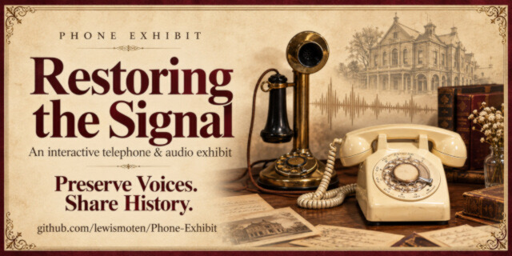

Restoring the Signal
Dialable exhibit

A live installation at Stone Branch Center for the Arts that joins a Raspberry Pi, Asterisk, and a PHP contribution site, with telephone audio, dialplans, transcription, and TTY support.
Live demo Source Videos Press and photos
Executive summary
Why it exists
An exhibit celebrating 150 years of communication needed a phone visitors could dial, and a way for people to contribute audio to it.
Outcome
A working public exhibit with a live website. The local newspaper covered it as an interactive exhibit celebrating 150 years of communication.
My role
Author and maintainer.
Technical overview
How it works
A live installation at Stone Branch Center for the Arts built from a Raspberry Pi, an Asterisk PBX server, and a PHP contribution site. The site converts audio with a 300-3000 Hz high-pass filter into 8 kHz, 16-bit mono WAV files to sound like a telephone and match what Asterisk plays. Transcriptions use AI, and Minimodem handles TTY teletype machines. A deploy script uploads only the files whose hash or size changed, using a remote manifest.
Hard parts
Secrets. FTP credentials are kept out of the project folder, even in ignored files, because local tools working in the repository can read anything saved there. The deploy script reads them from a file in my home directory.